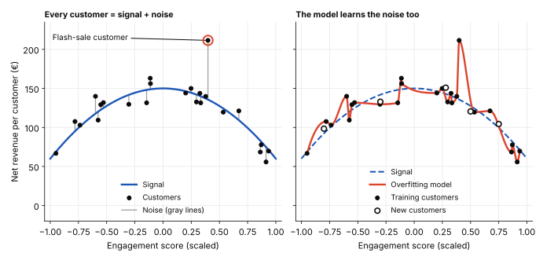
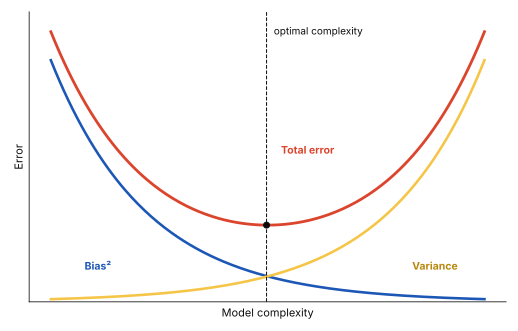

Regression analysis
Overfitting and Underfitting
Imagine you want to predict net revenue per customer. One model barely improves on a simple guess. Another fits its training data almost perfectly—but performs poorly on new customers. Both models are unreliable, but for opposite reasons.
In Evaluating and Interpreting a Regression Model, we looked at how well a model fits the data it was given. Now we take the next step: will it still work on customers it has never seen?
This is the problem of generalization. A model that is too simple may miss important patterns (underfitting). A model that learns the training data too closely may fail to generalize (overfitting). Throughout this post, we use customer revenue as an illustrative example. All data is illustrative.
Training Data and Test Data
Before building a machine learning model, data scientists typically split their dataset into training and test data. This is a standard step in the machine learning workflow: the model needs data to learn from, but we also need separate data to check whether it can make reliable predictions on new observations.
We divide the data into two parts:
- Training data is used to teach the model. It contains the predictors and the actual outcomes the model learns from.
- Test data is held back during training. Once the model is built, we use it to evaluate how well it predicts outcomes it has not seen before.
A practical example
Imagine we have data from 100 customers and want to predict their net revenue. We randomly assign 80 customers to the training set and reserve the other 20 for the test set.
The model learns from the 80 training customers. It then predicts revenue for the 20 test customers without having used their actual revenue values during training. We compare those predictions with the actual values to see how well the model performs on unseen data.
This matters because a model can perform very well on its training data but poorly on new customers. Comparing its performance on both datasets helps us identify potential overfitting and assess whether the model has learned patterns that generalize beyond the data it was trained on.
Splitting the Data with Python
from sklearn.model_selection import train_test_split
# Separate predictors from the target
X = df.drop(columns="net_revenue")
y = df["net_revenue"]
# Split the data: 80% training, 20% testing
X_train, X_test, y_train, y_test = train_test_split(
X,
y,
test_size=0.2,
random_state=42
)
print("Training customers:", len(X_train))
print("Test customers:", len(X_test))Training customers: 80
Test customers: 20What the code does:
- X contains the predictors used to estimate revenue.
- y contains the actual revenue values we want to predict.
- test_size=0.2 reserves 20% of the rows for testing.
- random_state=42 makes the random split reproducible, so you get the same split when you run the code again on the same data.
The result is 80 training observations and 20 test observations, assuming the dataset contains 100 rows. The code assumes df is your prepared pandas DataFrame and that net_revenue is your target column.

Comparing performance on both datasets shows why we need both:
| Model behavior | Training performance | Test performance |
|---|---|---|
| Underfitting | Poor | Poor |
| Good generalization | Good | Good |
| Overfitting | Very good | Much worse |
This is the central lesson: training performance alone cannot tell us whether a model will generalize well.
A random split is not always the right split
A random split is appropriate for many independent customer records, but not every dataset. Time-dependent data may require a chronological split, and repeated observations from the same customer may require a customer-level split to avoid data leakage.
Two Ways a Model Can Fail
Underfitting
An underfitting model is too simple to capture the underlying pattern in the data. It performs poorly even on the data it was trained on, often resulting in a low R².
Imagine predicting net revenue per customer using only the weekday of their first order. Monday and Saturday customers may spend very different amounts, but the weekday alone might explain very little of that variation. The model ends up predicting roughly the same revenue for everyone.
In this example, the model has not learned enough about what drives customer spending. Its R² is 0.03, meaning it explains only 3% of the variation in revenue in the data used to fit the model.

Typical causes of underfitting:
- Model too simple. A straight line misses a curved relationship between customer characteristics and revenue.
- Missing useful predictors. The model ignores important factors, such as order frequency or average basket size.
- Too much regularization. The model is restricted so strongly that it cannot learn the underlying relationship.
Because the model fails to capture the pattern in its training data, it is also unlikely to make reliable predictions for new customers.
Overfitting
Overfitting is the opposite problem. An overfitting model learns the training data too closely. It performs very well on the data it was trained on, but its predictions become less reliable when it encounters new data.
Imagine predicting net revenue per customer using 40 predictors but having data from only 60 customers. The model has many variables to work with relative to the number of observations. It may start treating random quirks as meaningful patterns. For example, one customer who happened to make a large purchase during a flash sale might disproportionately influence what the model learns. That pattern may not hold for other customers.
To understand why this happens, we need to distinguish between two things in the data:
- Signal: The underlying relationships that help explain customer revenue.
- Noise: Random variation that does not reflect a reliable, generalizable relationship.
An overfitting model learns both the signal and some of the noise. As a result, it fits its training data closely but struggles to generalize to the wider population.

How to Spot Underfitting and Overfitting
Comparing the error on the training data with the error on the test data tells the three situations apart.
Chart 4 shows the same 24 customers fitted three ways: a straight line (degree 1), a smooth curve (degree 2) and a very flexible curve (degree 12).

The errors behind these three fits, measured on the 24 training customers and on 200 new customers, tell the same story in numbers:
| Model | Training error | Test error |
|---|---|---|
| Degree 1 (underfitting) | €26 | €31 |
| Degree 2 (good fit) | €13 | €17 |
| Degree 12 (overfitting) | €12 | €54 |
Underfitting shows up as a high error on both sets. Overfitting shows up as a low training error but a much higher test error. Errors are RMSE (root mean squared error) in euros per customer.
Adding predictors also makes overfitting easier, because R² never falls when a predictor is added, even a useless one. That is why adjusted R² is used to compare models; see Evaluating and Interpreting a Regression Model.
Bias and Variance
Underfitting and overfitting describe what goes wrong with a model. Bias and variance help explain why.
- Bias describes how much a model’s assumptions prevent it from capturing the real relationship in the data. A model with high bias is often too simple and consistently misses important patterns. This is commonly associated with underfitting.
- Variance describes how sensitive a model is to the particular training data it receives. A model with high variance may learn patterns that are specific to one sample rather than patterns that hold more generally. This is commonly associated with overfitting.
The Bias–Variance Trade-off
A very simple model may miss important relationships, even when trained on different samples. A very complex model may fit one training sample extremely well but produce very different results when trained on another.
The goal is to find a balance: a model complex enough to capture meaningful patterns, but not so complex that it starts learning random noise.
The chart below shows how the two errors trade off as the model becomes more complex.

Strategies to Reduce Underfitting and Overfitting
If the model underfits
- Add relevant predictors that have a meaningful relationship with the outcome variable.
- Increase the sample size to provide the model with more information to learn patterns.
- Use feature engineering to create better variables that capture the underlying relationships.
If the model overfits
- Use adjusted R-squared to select models, avoiding unnecessary predictors that inflate R-squared.
- Split data into training and test sets to evaluate model performance on unseen data.
- Apply regularization techniques (if applicable) to penalize overly complex models.
- Simplify the model by removing irrelevant or redundant predictors.
How to explain it to stakeholders
“We compared a simple and a very complex model for predicting revenue per customer. The complex one looked almost perfect on the customers it was built on, with an average error of about €12. On new customers its average error was about €54, more than four times as large.”
“The simple model was off by about €13 on the customers it was built on and about €17 on new ones. It is less impressive on paper, but it behaves the same way on data it has not seen. We recommend the simple one. Which customers do we need to be able to predict well?”
Key takeaway
Underfitting shows up in poor training performance, but overfitting only shows up when you compare training performance with test performance. R² always rises with more predictors, so use adjusted R² to compare models.
You cannot remove both problems completely because of the bias-variance tradeoff, but you can keep them small once you know how to spot them.
Related posts
- Evaluating and Interpreting a Regression Model How R², MAE and MSE measure fit, and how confidence intervals describe uncertainty.
- Simple Linear Regression The fitted line and what its slope and intercept mean.
- The Four Assumptions of Simple Linear Regression When a fitted line can be trusted.